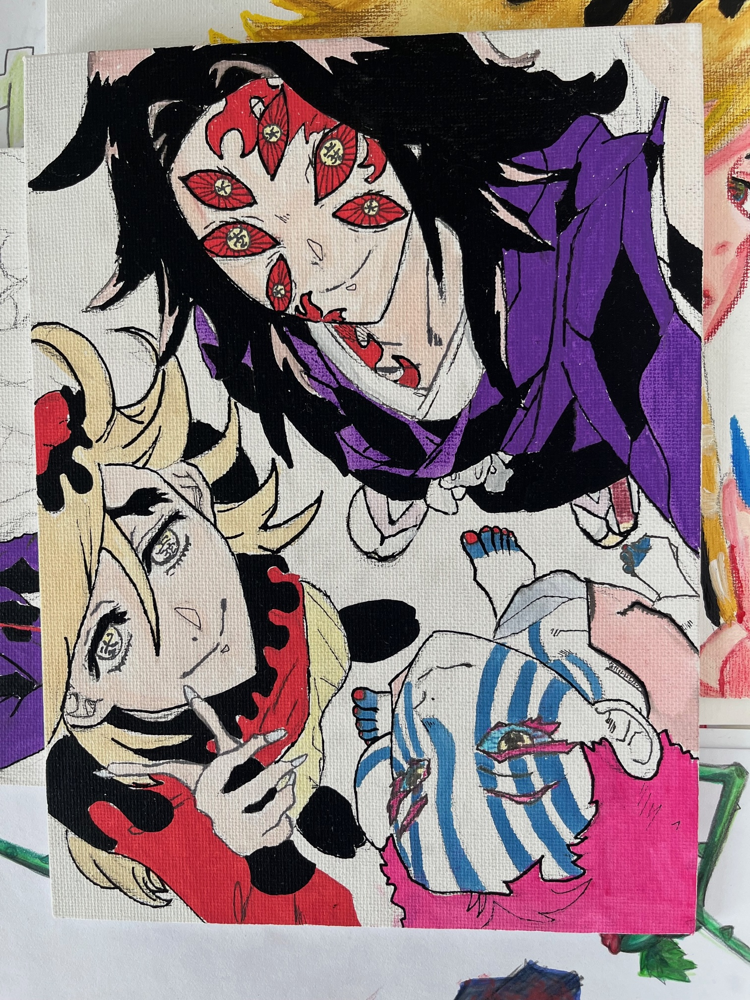
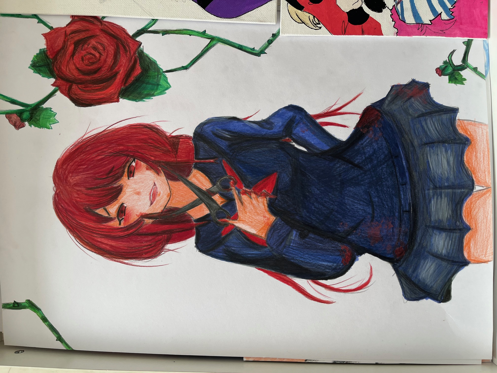
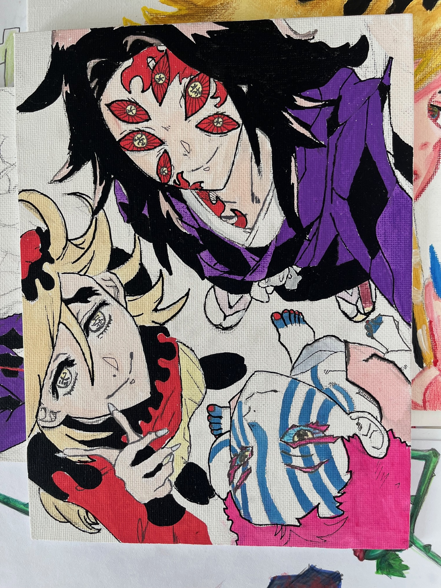
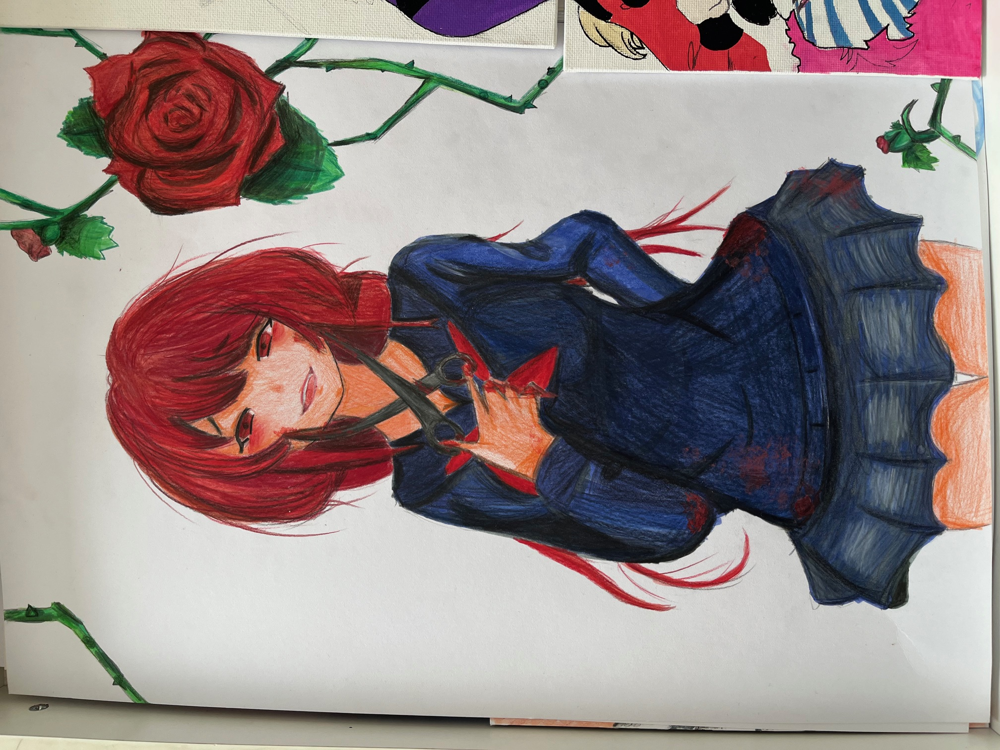
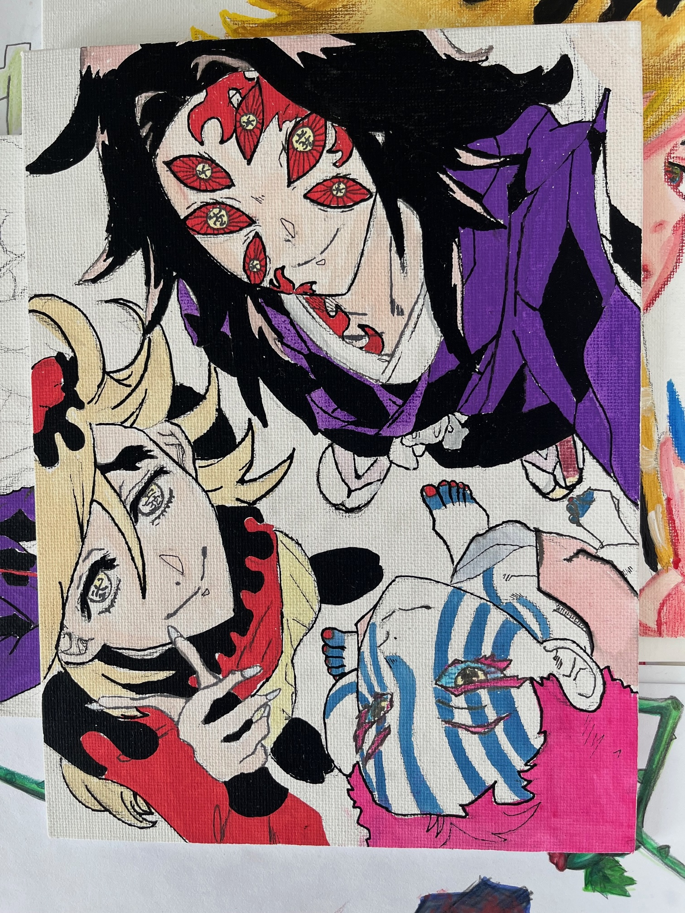
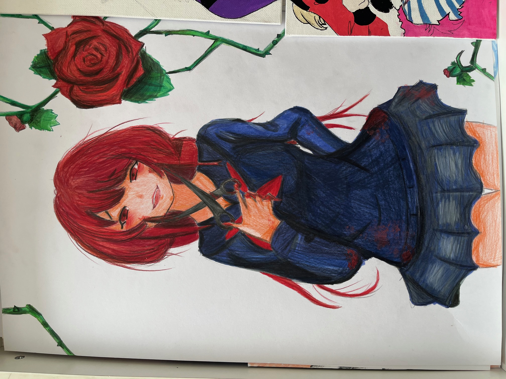

Jmenuju se Hedvika Kvíčerová. Svůj věk si nechám pro sebe, ale určitě se dá zjistit (třeba Google). Mám úžasnou rodinu, tedy hodného muže a dvě zábavné děti, Vláďu a Hedušku.
Starší Vláďa je šikovný výrostek a tělem i duší šermíř (jen do rytířského chování vůči sestře má ještě daleko). Jsme na něho fakt pyšní. Zaměstnává sice celou rodinu, ale stojí to za to. Pořád peru zpocenou šermířskou výstroj, z Vláďova pokoje je dílna na vylepování a sestavování kordů, které neustále láme, a s manželem jsme mistři logistiky, jak neustále tančíme mezi termíny tréninků a turnajů.
Mladší Heduška je milovnice hororů (nechápu), anime, mobilu a kreslení. Chce být zdravotní sestřičkou (protože miluje ty horory) anebo jít kreativním, výtvarným směrem. Dřív hrála fotbal, teď ráda plave. Je to moje sluníčko, i když je introvert a často se na mě mračí. Tohle je malá ukázka její tvorby:


Můj manžel Vláďa je skvělý, pořád se spolu smějeme, děláme jeden na druhého hloupé vtípky. Vláďa ze všeho nejraději cestuje. Kdyby mohl, tak nedělá nic jiného, než někam jede obytňákem. Oba milujeme jídlo (a já víno), takže cílem našich cest bývá právě jídlo. Někdy se jdeme podívat na nějaké památky, abychom se necítili hloupě, ale je to většinou o jídle.
Kromě jídla a vína (tichého i perlivého) miluju čtení. Čtu hlavně romantasy. Mívám odbobí, kdy ráda tvořím, třeba maluju. Byt už máme plný mých obrazů naší rodiny, takže jsem momentálně malování pověsila na hřebík. Doufám, že tvorba webových stránek na chvíli uspokojí moji občasnou potřebu kreativity.